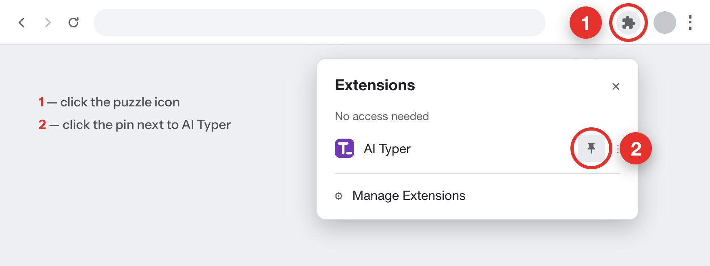
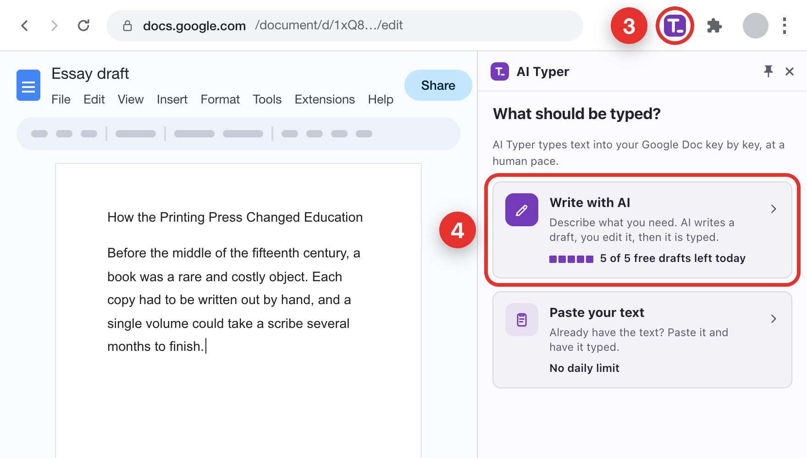

Chrome hides new extensions behind the puzzle icon. Pin AI Typer first — it takes two clicks.

With a document open, click the pinned icon 3 — the AI Typer panel opens next to it. Pick Write with AI 4 and describe what you need, or Paste your text if you already have it. Then set the pace and press Start typing.

AI Typer works in Google Docs only. You get 5 AI drafts a day; typing your own text has no limit. The text is typed as plain paragraphs — add headings and formatting yourself.
Tip: Alt+Shift+Y pauses and resumes typing (Option+Shift+Y on a Mac).